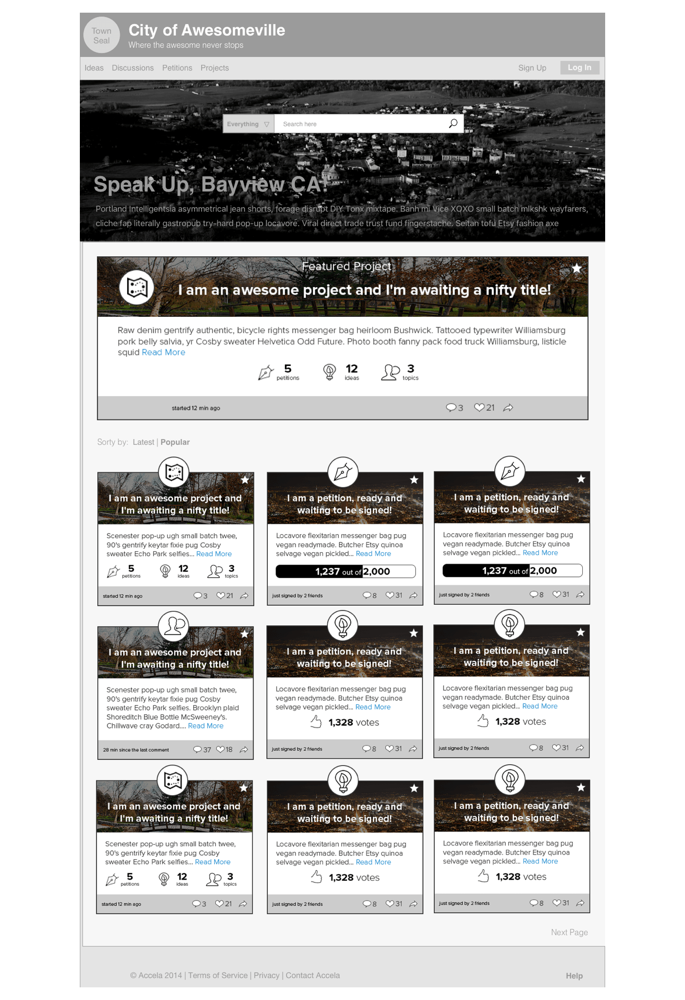

Leading the overall design, I worked with internal design team members and internal and external subject matter experts to define interactions and the interface for each user group.
medium fidelity prototype: I designed screens on paper first, gathered internal and external feedback then created a medium fidelity prototype using Sketch and InVision to test with different user groups.
